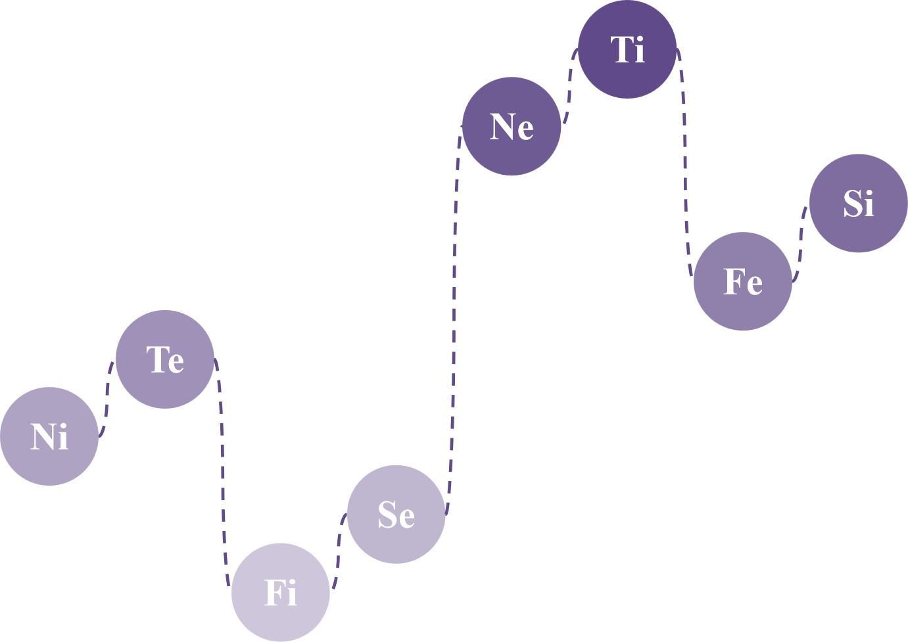
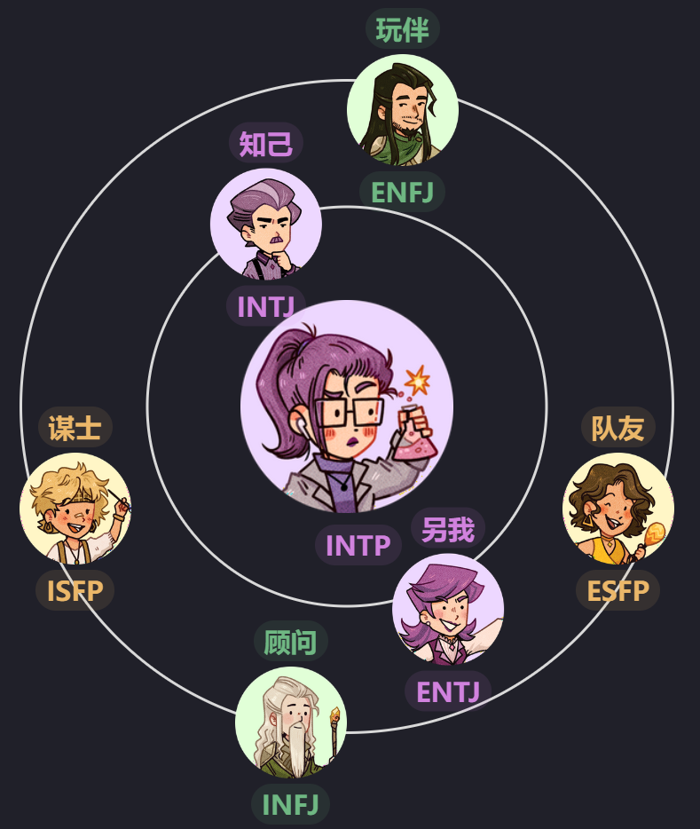

INTP
逻辑学家
INTP 是理性和分析能力强的人，被称为“逻辑学家”，他们优先考虑知识和理解。他们擅长剥离表面细节，深入探究系统或观念的基本原则。他们常常被视为心不在焉的教授，极其聪明，喜欢将主观理解发展和整理成一致的体系。他们具有灵活和包容的特点，但在面临对自己信仰的挑战时可能变得固执。
Ti和Ne是INTP的优势
认知功能和个体收集信息，做出决策并与外部世界互动的过程息息相关。 内倾思维（Ti）和外向直觉（Ne）是INTP的主导和辅助认知功能，是INTP的优势，含义和使命。
🌿 无名的天才
🌿 搞笑的I人
🌿 独来独往
🌿 虚无主义者
🌿 分析型
🌿 会多想
🌿 会嘲讽的I人
🌿 不遵循社会规范
🌿 质疑现实
🌿 追求真理
🌿 知识渊博
🌿 超然
🌿 绝对中立
🌿 难以琢磨
🌿 夜猫子
主导的Ti使INTP能够进行超然的、批判性的分析，以此解决复杂问题。他们十分关注逻辑一致性。 辅助的Ne有助于INTP收集新信息，使其主导的Ti有更大的知识域。
INTP的认知功能

🔮Ni就像远见家，他可以通过对世界及对世界的潜在模式和法律的更深入的了解来逃脱和超越当前情况的局限性。它是直观的和有见地的，能够从有意识和潜意识的思想中收集和综合信息，以产生敏锐的印象和见解。它重视生活的解释和促进理解，并且在各个领域都有创造力。
如何发展Ni: 可视化、模式识别、未来计划
🖐批评型父母功能具有超级批评和贬低的特点，经常导致自己或他人感到被拒绝。它可能受到触发器的触发，这些触发器激活了小丑功能。
当批评或挑战了INTP类型的关于接纳不同可能性的态度时，其批判位的内倾直觉（Ni）会被激活。作为反应，INTP可能会根据他们的直觉理解得出负面结论，并将预期的负面结果归咎于他人。他们可能会贬低他人的观察力，并批评他们目光短浅或不成熟，相信自己对各种情况的洞察力和理解更准确，并提供了最佳的前进道路。
🤺Te就像利刃出鞘，准备解决挑战和困难。Te专注于使用明确的逻辑，包括标准化方法、测量、政策和程序来改善系统和操作。它与解决实际问题、发现和分类事实以及改善公认的想法有关。它重视客观数据和事实，而不是抽象的思维，并依赖于外部来源的声音和价值。Te是有组织、高效和有效的，并且可能被认为是坚定、直接和无情的。
如何发展Te：设定明确的目标、组织信息、解决问题
🪞对立功能挑战主导功能，可能表现为消极行为，如被动攻击性行为或自我怀疑。它也可能投射到他人身上，导致不信任感。
对立的外倾思考（Te）在INTP类型中被激活时，他们会感到自己的环境受到他人的控制或强调的秩序或计划。INTP类型可能会在努力为自己的组织方法辩护时变得固执，他们可能会尝试用更优越的组织方案战胜对手。通过关注对立的外倾思考（Te）的指导，并不过分陷入自己的内倾思考（Ti），INTP类型可能会发现他们的想法实际上在现实世界中是适用的，并且可以为集体思维的进一步做出贡献，超出他们最初认为可能的范围。
🗻Fi就像富士山一样，具有许多隐藏的力量。Fi探索和完善个人的品味和感受，从而有助于个人的独特感。Fi根据个人喜好为事物分配价值，试图与自己的内在情感标准和价值观保持一致，并专注于保持内在的情感和道德秩序。但是，Fi可能难以向外表达其情绪，可能对他人冷漠或无动于衷。
如何发展Fi：反思价值观、创造性表达、正念实践
🪄 转化功能代表了我们性格中需要诚实来克服的缺陷。它经常被压抑，对我们来说很难理解或产生共鸣。
当INTP感到其个人价值观或自身价值受到他人的攻击或拒绝时，转化性的内倾情感（Fi）被激活。这可能导致INTP变得道德化，并肯定自己的善良，同时谴责他人的认为存在的缺陷。INTP可能会变得自恋，并根据自己的逻辑原则对自己严格要求在是非问题上。这可能表现为在面对所谓的迫害或批评时，保护自己的自我价值和价值观的愿望。
🔥Se就像火一样，寻找新的经历和刺激。Se专注于外部、具体的感官信息，并在当下寻找新的体验和刺激。它与收集有关直接环境的信息有关，并通过与其中的对象进行互动来充满活力。具有强大Se功能的人可能对自己当前的环境有很高的认识，并且很容易参与不仅仅是说话的活动。
如何发展Se：体育活动、感官经历、生活在当下
🤡 小丑功能以狡猾、欺骗性行为和保护第三功能的愿望为特征。它可能在关系中引发混乱和冲突，并造成不适或困惑的感觉。然而，它也可以作为促进成长和个体化的催化剂，通过打破自我限制的结构和创造新的选择。
当INTP的第三位势Si受到挑战时，小丑位的外倾感觉（Se）会出现。INTP可能会利用当前的现实来转移他人的批评或指责，指出其他人也在做同样的事情。他们还可能试图陷害那些让他们感到受限的人，指出那些人也在做或纵容类似的行为。INTP还可能寻求关于灵性等事物的具体证据，并试图亲自看待事物，而不依赖于他人的观点。
🎇Ne就像烟花一样，以创造力和可能性的爆发来照亮和扩展思想，引发新的联系和想法。Ne专注于探索情况或想法中潜在的可能性、含义和联系。它旨在以客观和未经过滤的方式理解情况的抽象、隐性品质。Ne具有创新性和开放性，通常以对新思想和可能性的渴望为特征。它可以是艺术、科学、机械或冒险的，并且通常对自我表达感到满意。
如何发展Ne：集思广益、探索新概念、联系想法
😊 辅助功能被昵称为“好父母”，因为它通常受到早期青少年时期的良好教养的影响，它帮助主导功能实现其目标，并通过提供不同的观点来平衡它。它在青少年时期和成年早期逐渐发展起来。
辅助位置的外倾直觉（Ne）帮助INTP收集新的信息并扩展已知范围，支持他们的英雄功能。INTP会从各种来源寻找想法和可能性，并以他们无法满足的好奇心而闻名。这个过程通过“模糊的镜头”来实现，它减弱对具体事实的关注，并允许更多的创造性联想。
🗡Ti就像十年磨一剑，不断地磨练和完善其逻辑。Ti使用逻辑来分析和检査技术、问题、概念或理论，以提高个人技能、方法和策略。Ti采用怀疑态度和还原的方法，并关注提出问题、创建理论并研究外部事实如何适合思想或理论的框架。
如何发展Ti：独立分析、逻辑难题、评估论点
🤓 主导功能是一个人最发达、最舒适和最本能的功能，它作为他们感知或判断世界的主要方式。它在童年时期形成，并成为人们的主要任务，因此通常是最健康和最强大的功能，因此被昵称为“英雄”。
主导的内倾思考（Ti）使INTP能够进行超然、批判性的分析并解开复杂问题。INTP关注逻辑的连贯性，力求理解世界运作的基本原理。他们使用主观逻辑，考虑细微差别和限定条件，并不做笼统的陈述。INTP通常专注于将思想和概念分解为各个组成部分，并可能对问题本身提出质疑，而不是直接给出明确的答案。
☀Fe就像太阳一样，变暖并为他人带来生命。Fe根据普遍的、客观的标准重视事物，并抑制个人观点。Fe致力于通过有效的沟通和社会智慧来建立和维持和谐关系。它很容易表达自己，有时可能会出现为真诚或假货。Fe们倾向于共识和稳定性，并可能在其信念中具有强烈的情感信念。
如何发展Fe：移情实践、小组动态、解决冲突
🤪 劣势功能是无意识和被压抑的，以支持主导功能。它是你个性中你不太了解并且可能不愿意承认的“黑暗”方面。对于大多数人来说，这个功能往往在中年后变得更加明显。
劣势的外倾情感（Fe）帮助INTP在短时间内与群体和谐相处，但对他们来说并不是一种强大的功能。当存在共同的兴趣时，他们更舒适和自信地与他人交往，但在社交场合中可能会回避或感到迷茫。他们可能也会感到不舒服和无能，无法管理人际关系或社交场合。他们倾向于将分析和理解概念的能力与内倾思考（Ti）优先于建立和维持社交联系。
🪙Si就像火中锻造的硬币，锻造的痕迹让它变得坚强。Si注意内心的身体感觉，并利用过去的经验评估新的体验。它可能导致一个古怪的、主观的观点，并且对他人似乎不合理。Si重视稳定性和对新经验或广泛体验的一致性，并且经常从经验中抽象出重要的要素，以了解新的经验。
如何发展Si：常规和计划、记忆练习、日记
🤪 第三功能被昵称为“永恒少年”，因为它代表着我们内心那个永恒少年，并与潜意识的精神力量有着特殊的关系。它经常被用作一种防御机制，以保护自己免受不舒服的情绪和感觉，并平衡主导功能和辅助功能。这个功能通常在成年时期达到完全成熟。
第三位的内倾感觉（Si）帮助INTP以有条理的方式组织和储存他们的经验和知识，以备将来参考。它还帮助他们清晰而详细地分析自己的内在世界和价值观，由INTP的主导功能引领，从而产生强烈的内在稳定感。
Ni
Te
Fi
Se
Ne
Ti
Fe
Si
哪些类人格与我最适配
作为INTP，你与ENTJ和INTJ自然产生共鸣，并且很可能与ESFP、ISFP、ENFJ和INFJ进行有趣的对话。


.webp)
.webp)
.webp)
.webp)